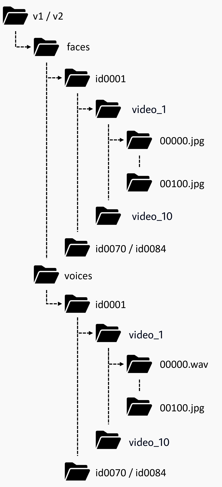

INTRODUCTION
Recent years have seen a surge in finding association between faces and voices within a cross-modal
biometric application along with speaker recognition. Inspired from this, we introduce a challenging
task in establishing association between faces and voices across multiple languages spoken by the same
set of persons. The aim of this paper is to answer two closely related questions: “Is face-voice
association language independent?” and “Can a speaker be recognized irrespective of the spoken language?”.
These two questions are important to understand effectiveness and to boost development of multilingual biometric
systems. To answer these, we collected a Multilingual Audio-Visual dataset, containing human speech clips of 154
identities with 3 language annotations extracted from various videos uploaded online. Extensive experiments
on the two splits of the proposed dataset have been performed to investigate and answer these novel research
questions that clearly point out the relevance of the multilingual problem.
Figure 1: Diagram showing cross-modal verification and matching task on Face-Voice Association with multiple languages.
DATASET
The data is obtained from YouTube videos, consisting of celebrity interviews along with talk shows, and television debates. The visual data spans over a vast range of variations including poses, motion blur, background clutter, video quality, occlusions and lighting conditions. Moreover, most videos contain real-world noise like background chatter, music, over-lapping speech, and compression artifacts, resulting into a challenging dataset to evaluate multimedia systems.
The dataset is available on the following links:
To view the meta-data for the dataset, you can view the PDFs attached below:
The file structure is like:
PUBLICATIONS
Dataset Paper
Cross-modal Speaker Verification and Recognition: A Multilingual PerspectiveAuthors: Nawaz, Shah and Saeed, Muhammad Saad and Morerio, Pietro and Mahmood, Arif and Gallo, Ignazio and Yousaf, Muhammad Haroon and Del Bue, Alessio
Baseline Paper
Fusion and Orthogonal Projection for Improved Face-Voice AssociationAuthors: Saeed, Muhammad Saad and Khan, Muhammad Haris and Nawaz, Shah and Yousaf, Muhammad Haroon and Del Bue, Alessio
CHALLENGE
The FAME Challenge 2024 focuses on Speaker Recognition in a multi-modal (face and voice) perspective. The complexity of the task increases further when we consider multiple spoken languages for the vocal data. This introduces a domain gap as the predictive models fail to establish a strong relationship across different languages for the speakers. The aim of the challenge is to develop techniques that tackle this domain gap and improve results on the Speaker Recognition task using multi-modal and cross-language techniques.
Click to see more details!